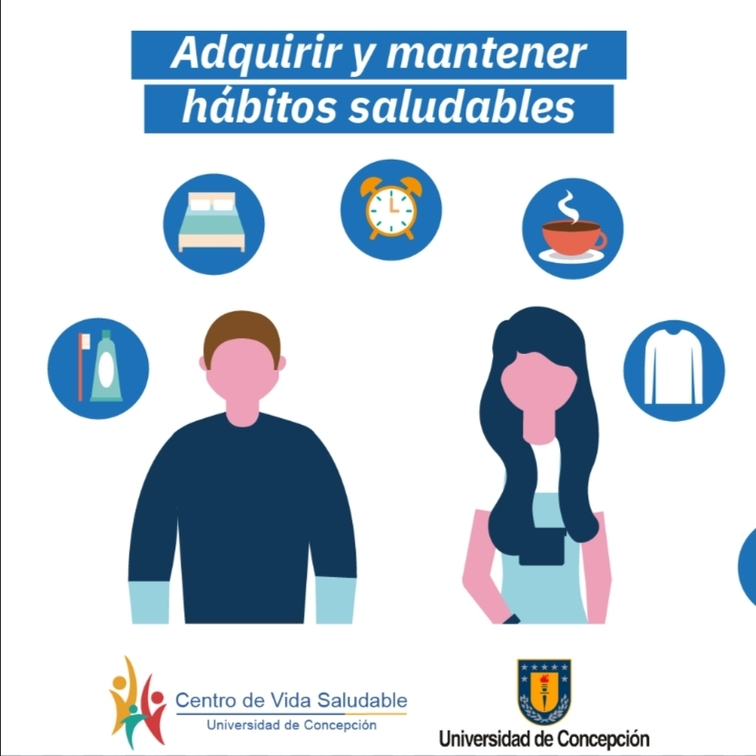
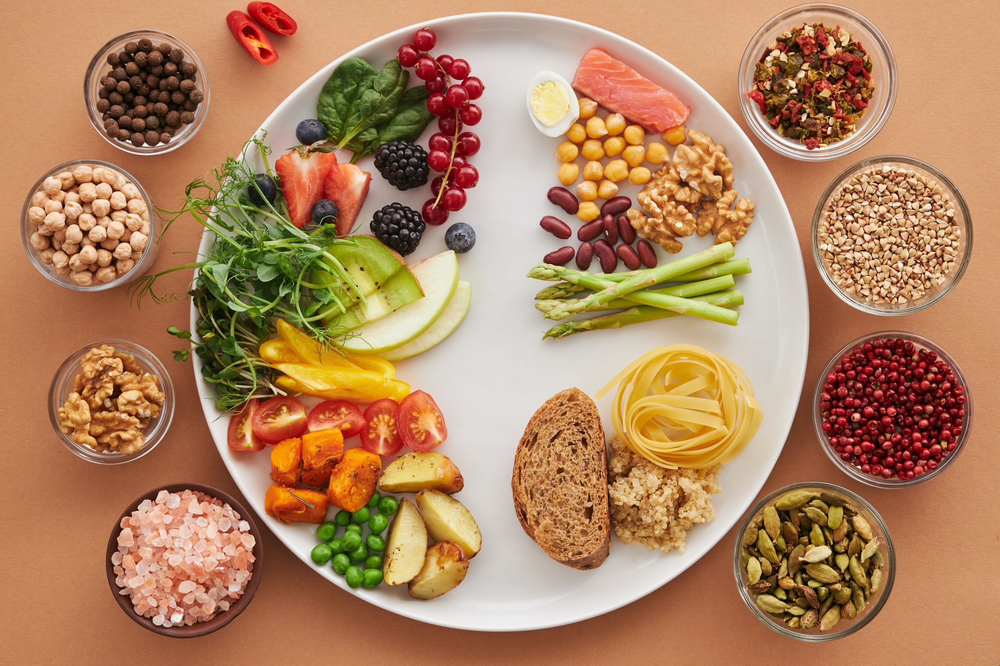
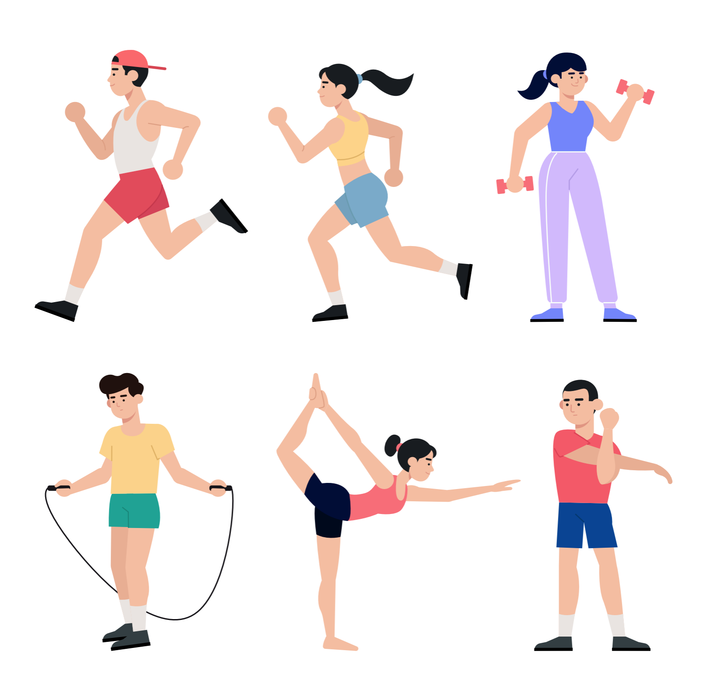

Pequeños hábitos que generan grandes cambios.

Los hábitos saludables son acciones que realizamos de forma constante para mejorar nuestro bienestar físico, mental y social. Una alimentación equilibrada, la actividad física y el descanso adecuado son fundamentales para una vida de calidad.

Una alimentación balanceada aporta energía y nutrientes esenciales para el correcto funcionamiento del organismo.

El ejercicio fortalece el corazón, mejora la resistencia, reduce el estrés y ayuda a mantener un peso saludable.
Dormir entre 7 y 9 horas diarias mejora la concentración, fortalece el sistema inmunológico y favorece la recuperación del organismo.
| Día | Actividad | Duración |
|---|---|---|
| Lunes | Caminar | 30 min |
| Martes | Ejercicio cardiovascular | 45 min |
| Miércoles | Yoga | 30 min |
| Jueves | Trote | 40 min |
| Viernes | Entrenamiento funcional | 45 min |
Más información en: Organización Mundial de la Salud
Visita la sección de alimentación saludable.